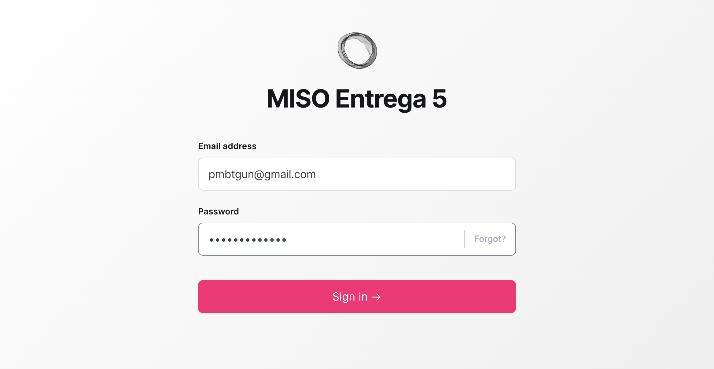

Escenario 1 Paso 1
Ghost Versión 5.72.2

Ghost Versión 4.44

Diferencia

Análisis del Escenario 1 Paso 1
Dimensiones iguales: Sí
Diferencia de dimensiones: {"width":0,"height":0}
Porcentaje de discrepancia bruto: 0.7609798829719677%
Porcentaje de discrepancia: 0.76%
Límites de la diferencia: {"top":291,"left":650,"bottom":991,"right":1647}
Tiempo de análisis: 650ms
Sin Discrepancias Significativas: Los cambios son mínimos o inexistentes.
Límites de la Discrepancia: Se ha detectado una discrepancia visual en las coordenadas (top: 291, left: 650, bottom: 991, right: 1647). Es importante revisar estos elementos visualmente para confirmar los cambios.
Tiempo de Análisis: 650 milisegundos.